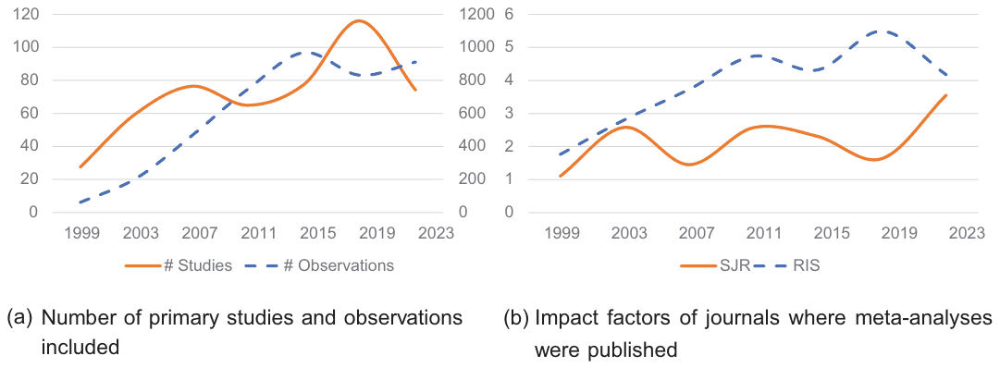

Conventional wisdom, meta-analysis, and research revision in economics
Sebastian Gechert, Bianka Mey, Matej Opatrny, Tomas Havranek, T. D. Stanley, Pedro R. D. Bom, Hristos Doucouliagos, Philipp Heimberger, Zuzana Irsova, Heiko J. Rachinger (2025), “Conventional wisdom, meta-analysis, and research revision in economics.” Journal of Economic Surveys 39(3), 980-999. 10.1111/joes.12630 https://doi.org/10.1111/joes.12630.
Sebastian Gechert1,2 | Bianka Mey1 | Matej Opatrny10 | Tomas Havranek3,4,5 | T. D. Stanley1,6 | Pedro R. D. Bom7 | Hristos Doucouliagos6,8 | Philipp Heimberger2,9 | Zuzana Irsova10 | Heiko J. Rachinger11
1Department of Economics and Business, Chemnitz University of Technology, Chemnitz, Germany
2FMM, Düsseldorf, Germany
3Faculty of Social Sciences, Institute of Economic Studies, Charles University, Prague, Czech Republic
4CEPR, London, UK
5Meta-Research Innovation Center at Stanford, Stanford, California, USA
6Department of Economics, Deakin University, Melbourne, Australia
7Deusto Business School, University of Deusto, Bizkaia, Spain
8IZA Bonn, Bonn, Germany
9Vienna Institute for International Economic Studies (WIIW), Vienna, Austria
10Anglo-American University, Prague, Czech Republic
11Universitat de les Illes Balears, Mallorca, Palma, Spain
Correspondence: T. D. Stanley, Department of Economics, Deakin University, Melbourne, Australia; Meta-Research Innovation Center at Stanford, Stanford, California, USA. Email: stanley@hendrix.edu
Abstract
Over the past several decades, meta-analysis has emerged as a widely accepted tool to understand economics research. Meta-analyses often challenge the established conventional wisdom of their respective fields. We systematically review a wide range of influential meta-analyses in economics and compare them to “conventional wisdom.” After correcting for observable biases, the empirical economic effects are typically much closer to zero and sometimes switch signs. Typically, the relative reduction in effect sizes is 45%–60%.
Keywords: conventional wisdom, meta-analysis, systematic review
JEL CLASSIFICATION: A14, B40, C10
1. INTRODUCTION
Dominant economic theories, seminal studies, and authoritative reviews of the literature often inform conventional wisdom. Practical policy recommendation and implementation require knowledge of the specific values of important economic parameters, for example, the employment effects of minimum wage hikes, returns to education, the fiscal multiplier, the price elasticity of energy demand, or the intertemporal elasticity of substitution. This conventional wisdom often defines the scope of public policy discussions and is used to calibrate economic models with these specific parameter values. However, conventional wisdom can also lead us astray.
Meta-analysis is the systematic and statistical analysis of all comparable empirical estimates of a specific parameter. It seeks to summarize, evaluate, and understand what we know about a given empirical economic question, phenomenon, policy parameter, or effect. Meta-analyses published in this Journal are compelled to follow guidelines that specify minimum standards for the coding, conducting, analyzing, and reporting of quantitative surveys of economic research (Havránek et al., 2020; Stanley et al., 2013). Meta-regression analysis (MRA) was developed specifically to explain and summarize the rich heterogeneity found among reported empirical economic estimates (Stanley & Jarrell, 1989; Stanley, 2001). Thousands of MRAs have been conducted on economic topics, with some hundred(s) of new studies produced each year (Havránek et al., 2020). MRA, with its ability to accommodate publication selection bias, was considered sufficiently important for understanding economics research to devote a special issue of this Journal (Roberts & Stanley, 2005). Meta-analysis can reveal surprising truths about economics once publication selection and misspecification biases have been identified and accommodated. Thus, a considerable number of meta-analyses in economics have questioned conventional wisdom in their respective fields.
This paper is a review of meta-analyses in the spirit of Ioannidis et al. (2017), Doucouliagos and Stanley (2013), Doucouliagos et al. (2018), Gechert (2022). The purpose of this study is to compare the findings of influential meta-analyses to the “conventional wisdom” about the same economic question or issue. What have we learned from meta-analyses of economics? How do their results differ from the conventional, textbook understanding of economics?
We identify “influential” meta-analyses as those with at least 100 citations that were published in 2000 or later, and those that were recommended by a survey of members of the Meta-Analysis of Economics Research Network (MAER-Net) (https://www.maer-net.org/). Out of the full sample of 360 studies, 72 studies cover a general interest topic in economics and include original empirical estimates for a certain effect size. We narrow down further to those meta-analyses that provide both a simple mean of the original effect size and a corrected mean, controlling for publication bias or other biases. This gives us a final list of 24 studies covering the fields of growth and development, finance, public finance, education, international, labor, behavioral, gender, environmental, and regional/urban economics.
We compare the central findings of the meta-analyses to “conventional wisdom” as classified by (1) a widely recognized seminal paper or authoritative literature review; (2) the assessment of an artificial intelligence (AI), the GPT-4 Large Language Model (LLM); and (3) the simple unweighted average of reported effects included in the meta-analysis.
For 17 of these 24 studies, the corrected effect size is substantially closer to zero than commonly thought, or even switches sign. Statistically significant publication bias is prevalent in 17 of the 24 studies. Overall, we find that 16 of 24 studies show both a clear reduction in effect size and a statistically significant publication bias. When comparing the best estimate of the meta-analysis with the conventional wisdom from the reference study, the GPT-4 estimate, or the simple unweighted average, the relative reduction in effect size is in the range of 45%–60% in all three comparison cases. This is close to “Paldam’s rule of thumb,” according to which publication bias typically inflates the uncorrected mean of the effect size by a factor of two (Doucouliagos et al., 2018; Paldam, 2022).
The paper is organized as follows: Section 2 reviews the related literature on the prevalence of publication selection bias. Section 3 describes how we selected the meta-studies in our final dataset and the information we collected. Section 4 provides a brief qualitative discussion of the contribution of selected meta-studies. Section 5 then shows the quantitative results from our survey. The final section concludes.
2. PUBLICATION SELECTION BIAS: A RENAISSANCE
For many decades, publication selection bias has been widely recognized as a serious threat to the validity of empirical science (Card & Krueger, 1995; DeLong & Lang, 1992; Hedges & Olkin, 1985; Ioannidis, 2005; Lovell, 1983; Rosenthal, 1979; Sterling, 1959; Stanley & Jarrell, 2005; Stanley, 2008; Stanley & Doucouliagos, 2012, 2014, to cite but a few). Publication selection bias is the process of selecting which research findings to report based on their statistical significance or their consistency with conventional economic theory. Publication selection bias is the consequence of any type of preferential reporting of statistically significant findings, including the file drawer problem, publication bias, reporting bias, specification searching, questionable research practices, and p-hacking. As famously exposed by Leamer (1983), reported economic findings are the consequence of the particular specification of innumerable combinations of independent variables, models, and methods (Sala-i Martin, 1997).
Evidence of exaggerated significance and effect size has been widely seen throughout the economics research literature. For example, a survey of 64,076 estimates from 159 areas of economic research found that the reported results are typically exaggerated by a factor of two or more (Ioannidis et al., 2017). Two highly powered replication studies of multiple economic and behavioral experiments corroborate this doubling of effects size (Camerer et al., 2016, 2018). Doucouliagos and Stanley (2013) show in a meta-meta-analysis of 87 empirical economics literatures that more competition and debate between rival theories (i.e., more pluralism) reduces publication bias. Methods to detect and correct publication selection bias were introduced and widely applied to economics in the May 2005 issue of the Journal of Economics Surveys (Roberts & Stanley, 2005). Since then, it has been standard to investigate publication selection bias when conducting meta-analyses in economics.
Recently, there has been a renaissance in documenting the effects of publication selection bias on reported economics research and in the development of new tools to identify and correct these biases. Franco et al. (2014) identify a severe underrepresentation of null findings, and simulations show how the meta-analysis of many smaller studies can reduce these biases (Hirschauer et al., 2022). Brodeur et al. (2016) document the presence of p-hacking among 50,000 tests reported by top economics journals. Brodeur et al. (2020) find that the top journals are not exceptional in this regard. Moreover, they stress that alternative experimental designs differ in the magnitude of publication bias. Yet, top journals have the power to reduce this threat to the credibility of economics research. Askarov et al. (2023) uncover evidence from 345 economic meta-analyses that mandatory data sharing policies in economic journals can be effective in reducing exaggerated effects and the severity of publication bias. Quite recently, Brodeur et al. (2023) investigate specific stages in the publication process and find that p-hacking is present prior to submission, somewhat mitigated by editors’ desk decisions, but again enforced by reviewers who prefer statistically significant results. Frankel and Kasy (2022) develop a framework to discuss the trade-off between nonselective publication of findings and policy relevance under scarce journal capacity. An experiment confirms that a preference for statistically significant results is widely held among economics scholars (Chopra et al., 2024). They promote pre-result reviews as a solution, which may be seen as part of a wider movement for more transparency and routine preregistration spearheaded by Christensen and Miguel (2018).
This study seeks to contribute to this rapidly growing literature by investigating how the findings from two dozen meta-analyses of specific economic areas of research compare to received conventional wisdom.
3. DATA COLLECTION
To collect the required data and generate our final dataset, we followed several steps. First, to identify relevant studies, we searched Scopus, Google Scholar, and Web of Sciences (WoS). Second, we employed an expert list and surveyed MAER-net members regarding influential meta-analyses.
The database search proceeded as follows:
Scopus: We used the search string “meta AND analysis OR estimat” and selected several qualifiers: “Economics, Econometrics and Finance,” “Articles in journals,” “English language”, and limited the keywords to “Meta-analysis” OR “Meta Analysis”. Also, we employed two further eligibility criteria: published in 2000 or later and studies that have 100 cites or more. This yielded 164 studies.
WoS: We used the query ‘‘SU = Economics AND AK = “meta-analysis” OR AK = “meta” OR AK = “meta analysis” OR AK = “Meta-analysis” OR AK = “Meta-Analysis” and applied the criteria on publication date and number of citations, which resulted in 57 studies from that source.1
Google Scholar: We used Harzing’s Publish or Perish, employing the keywords “meta-analysis” and “economics,” and set the sample period between 2000 and 2023, selecting 500 entries. After clearing for “Economic, econometric and finance published journal articles” and “English language,” 164 entries remained from that search. Meta-studies without an abstract and duplicates were dropped, which yielded a total of 333 candidate studies from the search queries.
In parallel, we conducted a simple voluntary expert survey in February 2023 to members of the MAER-net community. We sent the survey to 150 members, asking the following questions:
• Do you think that there have been meta-studies that have overturned conventional economic wisdom? [YES/NO]
• Which meta-studies were most influential in terms of overturning conventional wisdom in economics? It would be especially helpful to us if you could also give some evidence/reasons for your answer.
Within the scheduled time of 2 weeks, we received 45 responses (a response rate of 30%). Of them, 29 (65.9%) answered YES to the first question, the remaining 16 answered NO. Regarding the second question, the experts suggested 27 additional candidate studies. Thus, in total our dataset comprises 360 meta-studies covering a broad range of research fields that have the potential for providing results possibly challenging conventional wisdom in their respective research field. Based on title and abstract screening, we coded these studies with the following qualifiers:
• = 1 if the study is closely related to economics; 0 otherwise.
• = 1 if the study topic is of general interest (subjectively chosen); 0.5 for unsure and 0 for not widely known.
• = 1 if the study empirically synthesizes primary studies; 0 otherwise.
Furthermore, we broadly categorized them into “Agricultural/Ecological/Environmental,” “Behavioral,” “Health,” “Labor,” “Management,” “Meta-Analytical,” “Macro” and “Policy” to ensure that we captured a wide range of meta-studies.
For the next step, we continue with those studies that qualify in all three respects to ensure that they entail an important effect size estimate related to a conventional wisdom in economics. This procedure left us with 72 meta-analyses that underwent in-depth full-text screening to sample all information regarding relevant study characteristics and variables. This comprised the narrative and meta-analytical point of view about the conventional wisdom.2
From the preliminary list of 72 studies, we excluded those that do not provide enough information to compare an unweighted average of the effect sizes included and a measure of the underlying effect after correcting for publication bias or other biases. We further discarded all those meta-analyses that only report partial correlation coefficients (PCC), as they do not lend themselves to an economic interpretation of effect sizes. Our final sample consists of 24 meta-analyses, of which about 1/3 originated from the expert survey and 2/3 were found through database search. We review and analyze these studies in the following sections in terms of their impact on conventional wisdom in their respective research area.
4. THE GROWING RELEVANCE OF META-ANALYSIS IN ECONOMICS
In this section, we review the characteristics of the selected meta-studies and discuss in more detail some examples of influential meta-studies in specific economic fields. Figure 1 shows some overarching trends in the relevance of meta-analysis according to our larger sample of 72 studies. Figure 1a gives multi-year averages of the number of primary studies and observations included per meta-study according to their publication year. Figure 1b provides the multi-year averages of the impact factors according to the SCImago Journal Rank (SJR) and the Resurchify Impact Score (RIS).
Table 1 zooms in on the details of the 24 final studies, including their field and specific research question, the number of studies and estimates they cover, the number of citations they have attracted, as well as recent impact factors and rankings of the respective journals in which they are published.
| Meta-Study | Field | Research question | Studies | Estimates | Cited | RIS | SJR |
|---|---|---|---|---|---|---|---|
| Abreu et al. (2005) | Growth/development | Convergence rate | 48 | 619 | 158 | 4.8 | 1.8 |
| Ashenfelter et al. (1999) | Education/inequality | Rate of return to schooling | 27 | 96 | 825 | 2.4 | 1.5 |
| Bandiera et al. (2021) | Gender | Gender-wise pay-incentive effects | 15 | 17 | 15 | 5.4 | |
| Bom and Ligthart (2014) | Public finance/fiscal policy | Private output elasticity of public capital | 68 | 578 | 186 | 4.8 | 1.8 |
| Disdier and Head (2008) | International | Elasticity of trade volume to proximity | 103 | 1467 | 1594 | 5.0 | 8.3 |
| Doucouliagos & Stanley (2009) | Labor | Employment elasticity to minimum wage | 64 | 1424 | 621 | 2.9 | 1.6 |
| Doucouliagos et al. (2012) | Health | Value of a statistical life | 37 | 39 | 50 | 3.5 | 2.1 |
| Feld and Heckemeyer (2011) | International | Semi-elasticity of FDI to tax changes | 45 | 704 | 125 | 4.8 | 1.8 |
| Fidrmuc and Korhonen (2006) | Business cycles | Business cycle correlation of CEECs | 35 | 463 | 151 | 2.4 | 1.2 |
| Gechert (2015) | Public finance/fiscal policy | Fiscal multipliers | 104 | 1069 | 295 | 1.2 | 0.6 |
| Gechert et al. (2022) | Macro | Capital-labor substitution elasticities | 121 | 3186 | 36 | 1.6 | 2.5 |
| Havránek and Irsova (2011) | International | Semi-elasticity of domestic firms’ Productivity to foreign presence | 57 | 3626 | 240 | 3.7 | 3.6 |
| Havránek (2015) | Behavioral | Elasticities of intertemporal substitution in consumption | 169 | 2735 | 327 | 4.1 | 5.5 |
| Havránek et al. (2022) | Education/inequality | Elasticity of substitution between skilled and unskilled labor | 77 | 682 | 11 | 5.5 | 8.4 |
| Imai et al. (2021) | bBehavioral | Present-bias parameter in hyperbolic discounting | 28 | 220 | 63 | 3.5 | 5.1 |
| Kaiser et al. (2022) | Finance | Treatment effect financial education on knowledge and behavior | 68 | 677 | 208 | 7.8 | 10.4 |
| Koetse et al. (2008) | Macro | capital-energy substitution elasticities | 34 | 317 | 300 | 8.8 | 2.5 |
| Labandeira et al. (2017) | Environment | Price elasticities of energy demand | 428 | 1976 | 434 | 7.4 | 2.1 |
| Longhi et al. (2005) | Labor | Wage elasticity of native workers to immigration | 18 | 348 | 146 | 4.8 | 1.8 |
| Meta-Study | Field | Research question | Studies | Estimates | Cited | RIS | SJR |
|---|---|---|---|---|---|---|---|
| Melo et al. (2009) | Regional/urban | Urban agglomeration elasticities | 34 | 729 | 260 | 2.5 | 1.1 |
| Nijkamp and Poot (2005) | Labor | Wage elasticity to unemployment | 17 | 208 | 114 | 4.8 | 1.8 |
| Reynaud and Lanzanova (2017) | Environment | Value of lake ecosystem services | 133 | 699 | 112 | 6.0 | 1.8 |
| Rose and Stanley (2005) | International | Effect of currency union on trade | 34 | 754 | 168 | 4.8 | 1.8 |
| Vooren et al. (2019) | Labor | ALMP effect on labor market outcomes | 57 | 645 | 118 | 4.8 | 1.8 |
Note: The table presents characteristics of the final list of 24 meta-studies. Studies and Estimates give the number of primary studies and single estimates collected in the meta-analysis. Cited: number of times the meta-study was cited according to Google Scholar as of March 2023. Abbreviations: SJR, SCImago Journal Rank; RIS, Resurchify Impact Score as of the year 2021. Source: https://www.resurchify.com/ranking

Notes: The figure shows trends of the multi-year averages of the characteristics of the 72 pre-selected meta-studies. (a) Multi-year averages (based on publication year of the meta-study) of the number of primary studies and observations included per meta-study. (b) Multi-year averages of the impact factors of journals where meta-analyses were published, according to the SCImago Journal Rank (SJR) and the Resurchify Impact Score (RIS). Source: https://www.resurchify.com/ranking
The following broad picture emerges: meta-analyses have covered many important topics in economics, and they provide well-cited benchmark estimates for their respective fields. While they were less popular in economics about 20 years ago, many of them have been published in top-tier journals in recent years. With the strong turn towards empirical evaluation in economics (Angrist & Pischke, 2010; Angrist et al., 2017; Paldam, 2021) and the exploding number of available primary empirical studies, the demand for quantitative summaries has increased. At the same time, the meta-datasets have grown substantially over the years, pointing to the tremendous workload required to produce high-quality meta-analyses.
Apart from this broad assessment, what can we learn from single meta-studies in specific fields? Our set of studies covers important topics like finance, economic growth and development, public finance, education and inequality, international, labor, behavioral, gender, environmental, and regional/urban economics. In the following, we will briefly summarize one example per field.
We start with labor economics, one of the most intensely researched fields in meta-analysis. At least four of the 24 studies in our selection are related to labor markets. Here, we focus on the effects of minimum wages. The elasticity of employment to changes in minimum wages is a classic example where meta-analysis has contributed to overturning conventional wisdom. It is also the topic that first raised awareness about publication bias in economics. Minimum wages were conventionally thought to reduce employment of low-wage workers according to the neoclassical theory of the labour market and the findings of influential empirical studies (e.g., Brown, 1999). Card and Krueger (1994) shook this consensus with a quasi-experimental study that found either no adverse employment effects from raising the minimum wages in one of two adjoining US states, or even a positive employment effect. Card and Krueger (1995) also conducted a modest meta-analysis of 19 effects and attributed the exaggerated minimum wage effect to publication bias. Their work laid the basis for a dramatic overhaul of labor market theories and policy prescriptions. Another well-cited meta-analysis in this field, much more comprehensive and rigorous, is carried out by Doucouliagos & Stanley (2009). Both studies agree that there is severe publication bias in the literature, strongly overstating the negative employment effects of minimum wage hikes. Doucouliagos & Stanley (2009) also show that, after correction, no adverse employment effect remains. Since these meta-analyses, policy makers have become less skeptical about raising minimum wages.
Related to labor economics is the question of gender differences in the workplace. Bandiera et al. (2021) provide an excellent example of a very recent meta-analysis, published in the new and policy-oriented outlet American Economic Review: Insights. Bandiera et al. (2021) ask whether women indeed respond less to performance pay than men, a common assumption informed by studies on gender-specific risk aversion and self-confidence. Bandiera et al. (2021) hypothesize this effect is largely driven by self-selection of women (men) into less (more) competitive environments. Thus, they narrow their choice of primary studies to lab and field experiments that rule out or control for self-selection and provide at least two distinct treatments, one of which provides clearly higher-powered incentives. Their dataset contains 17 such high-quality experiments. In line with the methods proposed by Stanley et al. (2017) and Furukawa (2019), selecting only high-quality studies can be another promising approach to correct for publication bias. Indeed, Bandiera et al. (2021) do not apply established econometric techniques of detecting publication bias and an underlying effect. In their study set, they find that women perform better than men (even though the effect is not statistically significant) in performance-pay settings when self-selection is ruled out. This clearly contradicts the conventional wisdom of earlier studies, nuances the results, and establishes new standards to identify gender-specific treatment effects.
Studying responses to performance pay is also related to behavioral economics, another field where meta-analysts have made important contributions that have challenged stylized facts. A recent and excellent example is Imai et al. (2021), who consider 28 published articles with 220 estimates about present bias. Present bias means that persons’ implicit discount factors are larger for near-term comparisons than for decisions farther in the future (Laibson, 1997). A typical effect of this psychological phenomenon would be procrastination in financial decisions. Present bias is allegedly often detected in experiments and has become a standard assumption in behavioral economics. Imai et al. (2021) show that the simple average from their primary studies indeed points to present bias, with an average of the parameter , statistically-significantly different from , the null hypothesis of no present bias. Note that the setting differs from typical hypothesis testing against a zero effect. When the null hypothesis is and the expected alternative is , publication selection that discards statistically insignificant results and those with would likely lead to a downward-biased average estimate of . Indeed, this is what Imai et al. (2021) detect in their dataset. Considering various tests, they report a moderate publication bias and find the corrected mean, averaged over various tests in their full sample, to be actually 0.99, which is not statistically-significantly different from 1. Thus, present bias may be an overrated phenomenon, less prevalent than previously thought.
As noted above, the present bias has strong implications for finance, a field for which there is another recent representative meta-analysis, the one by Kaiser et al. (2022). This meta-study looks at the impact of financial education on financial knowledge and downstream behaviors. Kaiser et al. (2022) take into account 68 primary studies, which provide almost 700 observations on the impact of financial education. For the sake of homogeneity, we focus here on their findings about the impact on financial knowledge, as typically measured by standardized improvements in test scores. For this subset, Kaiser et al. (2022) establish that the publication probability of statistically insignificant results is low, pointing to inflationary publication bias. The simple average of treatment effects from financial education is 0.19 in their sample of primary studies, a bit lower than the well-known study by Bruhn et al. (2016) reports. Correcting for publication bias further reduces the underlying effect to 0.13. Thus, from the evidence in Kaiser et al. (2022), one might conclude that the effects of financial education may have been overstated in the past.
Ever since environmental issues and climate change have become mega topics, they have attracted a tremendous amount of empirical work. Meta-analysis can provide welcome summaries about important relations in ecological and environmental economics to experts and policy makers alike. A classic question in this field is the price elasticity of energy demand, which is central to the steering effects of energy taxes and emission certificates. Labandeira et al. (2017) accumulates the evidence of more than 400 studies that provide nearly 2000 estimates of energy price changes in transport, heating, and electricity use. We focus here on long-term elasticities, which provides a more comprehensive measure of steering effects. An early and influential survey by Dahl and Sterner (1991), finds an average long-term elasticity of -0.8 for gasoline demand. In contrast, the systematic meta-dataset in Labandeira et al. (2017) calculates a simple average of -0.52. Unfortunately, Labandeira et al. (2017) do not study the impact of publication bias or employ any other correction methods to arrive at a best-practice estimate.
We now turn to international economics, another widely covered field in meta-analysis. Four out of the 24 studies in our final selection contribute to this field, including the most-cited meta-analysis in our selection (Disdier & Head, 2008). This study addresses the question of how geographical distance affects bilateral trade flows. Their aim is to identify a “typical distance effect” and factors of heterogeneity. They do so by collecting almost 1500 estimates from more than 100 primary studies. The distance effect is usually estimated as , “the negative of the elasticity of bilateral trade with respect to distance” (Disdier & Head, 2008, p.39), in a gravity equation. The simple average estimate from their study, about 0.9, is on the lower end of the range of estimates according to conventional literature surveys. However, it still confirms the typical “puzzle” in the literature that distance is much more influential on trade flows than would be expected from mere transport costs alone. Disdier & Head (2008) also address publication bias, using a simple OLS regression of estimates on their standard errors. They only find a weakly positive correlation, where publication bias is actually statistically insignificant. The bias-corrected estimate is, therefore, close to the simple average, around 0.8. That is, the puzzling effects of distance on trade are slightly weakened, though still existent, according to this meta-analysis. Disdier & Head (2008) surmise that the impact of publication bias might be weaker in this literature since distance is often not the main variable of interest but a mere control variable in gravity models. It is also not a direct policy concern as, for example, the effects of minimum wages on employment.
The effect of distance on trade is somewhat related to agglomeration effects, a central topic in regional and urban economics. The study by Melo et al. (2009) asks whether the literature on agglomeration finds a genuine effect on productivity and which factors may explain differences in outcomes. They exploit more than 700 elasticity estimates from 34 primary studies and find that the effects vary a lot with country-specifics and industrial coverage, among other factors. The simple average of all elasticity estimates is around 0.06, similar to the central finding of the seminal study by Ciccone and Hall (1996). However, Melo et al. (2009) detect asymmetric publication bias in favor of more positive effects. The bias-corrected estimate falls to around 0.04, not overthrowing but clearly reducing the productivity benefits of dense agglomerations from a suspected strong effect to a more moderate effect.
Agglomeration effects may be supported or hampered by public infrastructure and other public capital. There are also several meta-analyses in the realm of public finances and fiscal policies. The most cited one in our selection, by Bom and Ligthart (2014), focuses on the productivity of public capital. It collects 68 studies with almost 600 estimates of the output elasticity of public capital. The simple mean of the elasticity according to the meta-analysis is about 0.19, only about half of the large estimates found in the seminal article by Aschauer (1989). Moreover, Bom and Ligthart (2014) detect positive publication bias in the literature, and arrive at a best publication bias corrected estimate of 0.11. Nevertheless, this is a sizeable and statistically significant average effect of public capital on output, which leads the authors to conclude that public capital is in short supply in OECD countries and could be extended to the benefit of societal welfare.
Public capital and institutions may be one of the driving forces of economic growth and development of countries. The study by Abreu et al. (2005) provides an excellent example of an early meta-analysis in economics that covers a highly relevant topic, the “legendary” measure of rate of conditional convergence between income levels of poor and rich countries. This value of 2%, which was established for several conditions and samples by, among others, Sala-i Martin (1996), has been a major stylized fact in the growth literature for many years. It posed a puzzling case to the baseline neoclassical growth model of Solow, Swan and Ramsey, which would predict a much faster catching-up of poor countries through capital accumulation. Abreu et al. (2005) collect about 600 estimates from the empirical literature on -convergence. They show that the dispersion of estimates is indeed wide, questioning the confidence in a single measure of 2% as a “natural constant.” Moreover, Abreu et al. (2005) find a systematic relation to unobserved heterogeneity in technology levels that, if taken into account, raises the value of . At the same time, they detect statistically significant publication bias that inflates the average of reported estimates. They conclude with a corrected average convergence rate of 2.9%, which is, however, subject to strong heterogeneity. This finding points to the necessity to take into account country-specific or region-specific circumstances and institutions that cannot be captured by a universal growth model.
A more fundamental parameter that is related to growth and development, as well as other topics in macroeconomics in general, is the elasticity of substitution between capital and labor () in production functions, which has been studied by Gechert et al. (2022). The size of the elasticity has important implications for growth and business cycle models, the effectiveness of monetary and tax policies, or the functional distribution of incomes. In many macroeconomic models, the elasticity is conveniently assumed to be equal to (the Cobb-Douglas case). More flexible CES approaches tend to assume a value of 0.5. Gechert et al. (2022) collect more than 3,000 estimates from 121 studies. They show that indeed a simple mean of all estimates is close to the Cobb-Douglas case with . However, publication bias is prevalent in this literature, where negative values are implausible and an attractor for large positive estimates exists. Correcting for this bias and following some best practices from the literature leads to a consensus estimate of , strongly rejecting the conventional Cobb-Douglas assumption. Under these conditions, labor and capital are gross complements. Thus, wage rises in relation to the costs of capital may not lead to a strong replacement of labor by capital. Consequently, alternative explanations have to be found for the secular decline in the labor share. If the elasticity of substitution is far below one, the fall in the labor share cannot easily be explained by capital deepening in a neoclassical growth model, as in Piketty and Zucman (2014). Directed technical change or an increase in market concentration are alternative explanations that do not hinge on high values of .
If capital-labor substitution is a fundamental parameter in macroeconomics, so is the elasticity of substitution between skilled and unskilled labor, a key concept not only in macroeconomics but also in education and inequality economics. The recently published meta-analysis by Havránek et al. (2022) considers this relation, which is often assumed to be 1.5 in model parameterization. This would imply that skilled and unskilled workers are gross substitutes, though not too strongly. For reasons of identification, most primary studies actually estimate the negative inverse of the elasticity, which, under the conventional assumptions, would amount to -2/3. As an important new feature, Havránek et al. (2022) take into account both publication bias, which would typically lead to inflated estimates of the inverse elasticity (i.e., a downward biased elasticity), and attenuation bias, which would draw the inverse elasticity towards zero (i.e., an upward biased elasticity). Their central finding is that publication bias trumps attenuation bias, and that an unbiased average estimate of the negative inverse should rather be around -1/4, that is, a strong substitution elasticity of close to 4. This implies that skill-biased technical change has a strong effect on the relative demand for skilled labor and the skill premium, stronger than was previously held.
5. QUANTIFYING RELATIVE RESEARCH REVISION BY META-ANALYSIS
Many of the aforementioned examples, even though they consider very different research questions, seem to share a common pattern: the parameter of interest, after a thorough and comprehensive collection of empirical evidence, and after accounting for publication selection bias as well as influential control variables, is often smaller in absolute terms than the common wisdom as derived from an influential primary study, a classic literature review, mere conventions, or when considering simply the unweighted average from the meta-sample. Such a pattern has already been documented in the meta-meta-analyses of Ioannidis et al. (2017) and Doucouliagos et al. (2018), who show that effect sizes systematically appear inflated in several literatures if publication bias is prevalent.
We assess this pattern more systematically for our selection of 24 meta-studies. Table 2 compares the corrected mean from the meta-analysis with (i) a narrative reference study, (ii) the answer from an artificial intelligence (AI), and (iii) the unweighted simple mean from the meta-analysis.
(i) For each of the meta-studies, we searched for a conventional wisdom point estimate from a narrative reference study. This seminal paper can be a recent conventional literature survey or a highly cited and well-published primary study that set the tone for follow-up primary studies in the respective literature. Importantly, the narrative study needs to provide a preferred estimate of the parameter of interest. The reference study is cited in column (2), and its qualitative as well as quantitative assessment are given in columns (3) and (4) of Table 2.
| Meta-Study | Seminal study conventional wisdom (CW): (1) Reference | Seminal study conventional wisdom (CW): (2) Qualitative | Seminal study conventional wisdom (CW): (3) Quant | GPT4: (4) AI CW | Meta-Finding: (5) Simple Mean | Meta-Finding: (6) Correct. Mean | Meta-Finding: (7) Pub Bias |
|---|---|---|---|---|---|---|---|
| Abreu et al. (2005) | Sala-i Martin (1996) | +: poor countries catch up | 2.00 | 2.00 | 4.30 | 0.30 | yes |
| Ashenfelter et al. (1999) | Psacharopoulos (1994) | +: school years increase earnings | 0.09 | 0.09 | 0.07 | 0.07 | yes |
| Bandiera et al. (2021) | Gneezy et al. (2003) | −: women respond less to performance pay | −0.28 | [n/a] | 0.08 | 0.07 | [n/a] |
| Bom and Ligthart (2014) | Aschauer (1989) | +: public capital enhances productivity | 0.39 | 0.18 | 0.19 | 0.11 | yes |
| Disdier & Head (2008) | Anderson and Newell (2003) | +: bilateral trade increases with proximity | 1.30 | 0.95 | 0.91 | 0.80 | no |
| Doucouliagos & Stanley (2009) | Brown (1999) | −: higher minimum wage reduces employment | −0.08 | −0.10 | −0.19 | 0.04 | yes |
| Doucouliagos et al. (2012) | OECD (2012) | +: large benefits from improving health/safety | 3.90 | 6.00 | 9.50 | 1.66 | yes |
| Feld and Heckemeyer (2011) | Bénassy-Quéré et al. (2005) | −: higher tax rates reduce FDI | 4.79 | 2.50 | 3.35 | 1.74 | yes |
| Fidrmuc and Korhonen (2006) | Artis and Zhang (1997) | +: synchronous business cycles of CEECs and Euro Area | 0.60 | 0.60 | 0.15 | 0.16 | no |
| Gechert (2015) | Ramey (2019) | +: tax cuts strongly increase GDP | 2.50 | 0.65 | 0.54 | 0.61 | no |
| Gechert et al. (2022) | Knoblach and Stöckl (2020) | +: close to unity (Cobb-Douglas) | 0.75 | 0.95 | 0.90 | 0.30 | yes |
| Havránek and Irsova (2011) | Javorcik (2004) | +: spillovers from foreign affiliates to local firms | 0.38 | 0.75 | 0.88 | 0.18 | yes |
| Meta-Study | Seminal study conventional wisdom (CW) (1) Reference | Seminal study conventional wisdom (CW) (2) Qualitative | Seminal study conventional wisdom (CW) (3) Quant | GPT4 (4) AI CW | Meta-Finding (5) Simple Mean | Meta-Finding (6) Correct. Mean | Meta-Finding (7) Pub Bias |
|---|---|---|---|---|---|---|---|
| Havránek (2015) | Hall (1988) | +: higher shifts consumption to future | 0.50 | 0.35 | 0.50 | 0.07 | yes |
| Havránek et al. (2022) | Cantore et al. (2017) | − (inverse): (skilled and unskilled labor gross substitutes) | −0.67 | −0.57 | −0.56 | −0.27 | yes |
| Imai et al. (2021) | Augenblick et al. (2015) | 1->0: people are present-biased | 0.07 | 0.20 | 0.04 | 0.01 | yes |
| Kaiser et al. (2022) | Bruhn et al. (2016) | +: benefits of greater financial knowledge | 0.23 | 0.20 | 0.19 | 0.13 | yes |
| Koetse et al. (2008) | Berndt and Wood (1979) | +/−: C-E complements or substitutes | 0.43 | 0.50 | 0.47 | 0.46 | [n/a] |
| Labandeira et al. (2017) | Dahl and Sterner (1991) | −, : gasoline normal inelastic good, substantial long-run | −0.80 | −0.70 | −0.53 | −0.53 | [n/a] |
| Longhi et al. (2005) | Card (2001) | −: higher labor supply reduces wages | −0.15 | −0.15 | −0.12 | −0.04 | no |
| Melo et al. (2009) | Ciccone and Hall (1996) | +: agglomeration enhances productivity | 0.06 | 0.04 | 0.06 | 0.04 | yes |
| Nijkamp and Poot (2005) | Blanchflower and Oswald (2003) | −: wage curve downward-sloping | −0.10 | −0.10 | −0.12 | −0.08 | yes |
| Reynaud and Lanzanova (2017) | Egan et al. (2009) | +: ecosystem services increase valuation of lakes | 153 | [n/a] | 315 | 153 | yes |
| Rose and Stanley (2005) | Rose (2000) | +: currency unions increase trade | 1.20 | 1.15 | 0.86 | 0.39 | yes |
| Vooren et al. (2019) | Heckman et al. (1999) | +: ALMP improve labor market outcomes (long run) | 0.03 | 0.10 | 0.02 | 0.004 | yes |
Note: The table compares the findings of the 24 selected meta-analyses with those from a reference study in the respective field and the conventional wisdom estimate from GPT-4.
| Meta-Study | Seminal | AI | Meta |
|---|---|---|---|
| Abreu et al. (2005) | −85% | −85% | −93% |
| Ashenfelter et al. (1999) | −24% | −24% | −7% |
| Bandiera et al. (2021) | −124% | [n/a] | −18% |
| Bom and Ligthart (2014) | −73% | −39% | −44% |
| Disdier & Head (2008) | −38% | −16% | −12% |
| Doucouliagos & Stanley (2009) | −155% | −141% | −122% |
| Doucouliagos et al. (2012) | −57% | −72% | −83% |
| Feld and Heckemeyer (2011) | −64% | −31% | −48% |
| Fidrmuc and Korhonen (2006) | −73% | −73% | 6% |
| Gechert (2015) | −75% | −6% | 13% |
| Gechert et al. (2022) | −60% | −68% | −67% |
| Havránek and Irsova (2011) | −53% | −76% | −80% |
| Havránek (2015) | −85% | −79% | −85% |
| Havránek et al. (2022) | −60% | −53% | −51% |
| Imai et al. (2021) | −83% | −94% | −72% |
| Kaiser et al. (2022) | −43% | −36% | −32% |
| Koetse et al. (2008) | 7% | −8% | −2% |
| Labandeira et al. (2017) | −34% | −25% | 0% |
| Longhi et al. (2005) | −72% | −72% | −64% |
| Melo et al. (2009) | −35% | 11% | −33% |
| Nijkamp and Poot (2005) | −23% | −23% | −35% |
| Reynaud and Lanzanova (2017) | 0% | [n/a] | −51% |
| Rose and Stanley (2005) | −68% | −67% | −55% |
| Vooren et al. (2019) | −87% | −96% | −80% |
| Median | −62% | −60% | −50% |
| Mean | −61% | −53% | −46% |
Note: The table presents the calculations of the three relative research revision (R3) indices for the 24 final meta-analyses according to the information in Table 2.
(ii) Alternatively, we also asked an AI, specifically the large language model (LLM) GPT-43, for a best possible point estimate of the parameters of interest in our 24 meta-studies. The generic question to the AI for each of the 24 fields reads as follows:
Please provide an estimate of the effect of [research question of the meta-analysis] based on all relevant literature up to year [publication date of the meta-analysis]. That is, the estimate should reflect the state of knowledge prior to the publication of the meta-analysis [title of the meta-analysis] on the same topic. The estimate should take into account all available scientific studies, not just one prominent study. At the same time, the estimate should rigorously summarize the conventional wisdom in the literature in year [publication date of the meta-analysis]. Answer like an economist and expert in this field. Provide the best possible point estimate of the effect together with the corresponding 95% confidence intervals.
The answer regarding the point estimate given by the AI is documented in column (5). Note that the AI sometimes only provides a range of estimates, of which we take the simple average. In two cases, the AI did not respond with a quantitative assessment. Nevertheless, in most cases, the AI gave an informative and deliberative answer, including a point estimate and a confidence interval. The full answers are provided in the supplementary material. On average, the AI's point estimate is quite close to the results from our own selection of seminal conventional studies (which was done beforehand on a different laptop).
(iii) Our third comparison (in column 6) is the simple unweighted mean of estimates included in the meta-analysis, which is usually given in the descriptive statistics of the meta-study. Such an unweighted average of a broad set of primary studies does not account for any corrections for publication bias or best practices. One might expect this measure to differ substantially from the estimate of the narrative reference study. While this is partly the case for individual research questions, on average, the figures do not differ too much. This might point to the performative power of seminal studies in setting an established reference value for the parameter of interest.
The three reference values can be compared to the corrected mean from the meta-study as documented in column (7). Usually, this corrected mean refers to an estimate from the meta-study after correcting for publication bias and/or defining a best practice estimate. Meta-analyses have applied various approaches to such corrections in the past, and only recently, has the field converged to established guidelines and standard test procedures (Havránek et al., 2020; Irsova et al., 2023; Stanley et al., 2013). Thus, there is no single coherent way for extracting the corrected mean from the respective meta-analysis. Primarily, we referred to a preferred estimate from the meta-study and we document our choice in the supplementary material if more than one such candidate estimate is available in the meta-study.
It turns out that quite often the corrected mean from the meta-analysis is substantially closer to zero (or to the null hypothesis) than all of the three comparison measures. Very often, this lower value is driven by some sort of publication bias: 17 of the 24 studies detect a statistically significant publication bias (column 8).
In order to compare and quantify this pattern across studies, we set up Relative Research Revision () indices for our three comparison metrics. The is calculated as follows:
where is the meta corrected mean from field , and is the conventional wisdom according to comparison metric (from the narrative study, the AI, or the simple mean of the meta-study). The index has the following useful properties: it gives the percentage change of the absolute value of the conventional wisdom effect size due to the meta-analysis. The percentage change is positive in cases when and have the same sign and exceeds the in absolute value (an upward revision). It is negative and between 0% and -100%, when is closer to zero than (a downward revision). It exceeds -100% in cases of a sign reversal of the conventional wisdom.4
The results for the indices are given in Table 3. For 11 of the 24 studies, the downward revision is -50% or more extreme, consistently among all three indices. In 17 cases, at least one of the measures indicates such a strong downward revision. In two instances, the corrected effect size even switches sign. While the three indices differ for each single case, considering their means and medians shows that they are astonishingly similar, falling within a close range from about -45% to -60%. Note that this pattern does not differ much between studies that entered through the expert survey and those from the database search. That is, the average corrected mean from a meta-study in our sample reduces the conventional-wisdom effect size by about half. This is a confirmation of Paldam's rule of thumb that the various incentives for publication selection inflate the average estimate typically by a factor of 2 (Ioannidis et al., 2017; Paldam, 2022). It also resonates with Camerer et al. (2018) who show that highly-powered replication studies of experiments in social sciences report, on average, only half of the effect size of the original study.
6. CONCLUSION
In a survey of meta-analyses in the spirit of Ioannidis et al. (2017), Doucouliagos and Stanley (2013), Doucouliagos et al. (2018), and Gechert (2022), we have found that many meta-analyses overturned conventional wisdom in their specific fields by exploiting comprehensive datasets of empirical estimates and by detecting publication bias. On average, estimates shrink by about half in absolute terms when comparing the unweighted average and the mean beyond publication bias, confirming "Paldam's rule" (Ioannidis et al., 2017; Paldam, 2022). This finding also resonates with Camerer et al. (2018), who show that highly-powered replication studies of experiments in social sciences report, on average, only half the effect size of the original study.
Our analysis lends support to the potential of meta-analysis to bring forward improvements regarding a more robust calibration of model-parameters, as well as the economic effect sizes of policy interventions. This could lead both to more accurate policy recommendations and to rethinking theoretical channels of impact.
Future research might decompose the contributions of different motives of publication bias, stemming from theory conformism, or a search/preference for statistically significant results. Moreover, the use of AI in meta-analysis surely has more potential to be exploited in the future. As more data points become available, it might also be interesting to evaluate whether the results of meta-analyses influence the range of empirical estimates that are published afterwards, and as such have a transforming impact on the prevalence of publication bias. Finally, meta-analysts themselves might establish pre-analysis standards in order to make the process of meta-data collection and analysis more transparent and replicable.
ACKNOWLEDGMENTS
Gechert, Heimberger and Mey acknowledge financial support by the European Macro Policy Network (EMPN); Havranek acknowledges support from the Czech Science Foundation (#24-11583S). Bom, Irsova and Rachinger acknowledge support from the Czech Science Foundation (#23-05227M) Havranek and Irsova acknowledge support from NPO "Systemic Risk Institute" LX22NPO5101, funded by the European Union-Next Generation EU (Czech Ministry of Education, Youth and Sports, NPO: EXCELES).
ORCID
Sebastian Gechert https://orcid.org/0000-0003-2657-1058
Bianka Mey https://orcid.org/0000-0003-2321-3212
T. D. Stanley https://orcid.org/0000-0002-3205-1983
Pedro R. D. Bom https://orcid.org/0000-0002-5643-2975
Philipp Heimberger https://orcid.org/0000-0001-9874-7345
REFERENCES
Some entries below were printed without a link. Where a Crossref record matches one and no other record plausibly could, its DOI is shown; ambiguous references are left as they were printed.
- Abreu, M., de Groot, H. L. F., & Florax, R. J. G. M. (2005). A meta-analysis of b-convergence: The legendary 2%. Journal of Economic Surveys, 19(3), 389–420. 10.1111/j.0950-0804.2005.00253.x
- Anderson, S., & Newell, R. (2003). Simplified marginal effects in discrete choice models. Economics Letters, 81(3), 321–326. 10.1016/s0165-1765(03)00212-x
- Angrist, J. D., Azoulay, P., Ellison, G., Hill, R., & Lu, S. F. (2017). Economic research evolves: Fields and styles. American Economic Review, 107(5), 293–297. 10.1257/aer.p20171117
- Angrist, J. D., & Pischke, J.-S. (2010). The credibility revolution in empirical economics: How better research design is taking the con out of econometrics. Journal of Economic Perspectives, 24(2), 3–30.
- Artis, M. J., & Zhang, W. (1997). International business cycles and the ERM: Is there a European Business cycle? International Journal of Finance & Economics, 2(1), 1–16. 10.1002/(sici)1099-1158(199701)2:1<1::aid-ijfe31>3.0.co;2-7
- Aschauer, D. A. (1989). Is public expenditure productive? Journal of Monetary Economics, 23(2), 177–200. 10.1016/0304-3932(89)90047-0
- Ashenfelter, O., Harmon, C., & Oosterbeek, H. (1999). A review of estimates of the schooling / earnings relationship, with tests for publication bias. Labour Economics, 6(4), 453–470. 10.1016/s0927-5371(99)00041-x
- Askarov, Z., Doucouliagos, A., Doucouliagos, H., & Stanley, T. D. (2023). The significance of data-sharing policy. Journal of the European Economic Association, 21(3), 1191–1226. 10.1093/jeea/jvac053
- Augenblick, N., Niederle, M., & Sprenger, C. (2015). Working over time: Dynamic inconsistency in real effort tasks. The Quarterly Journal of Economics, 130(3), 1067–1115. 10.1093/qje/qjv020
- Bandiera, O., Fischer, G., Prat, A., & Ytsma, E. (2021). Do women respond less to performance pay? Building evidence from multiple experiments. American Economic Review: Insights, 3(4), 435–454. 10.1257/aeri.20200466
- Bénassy-Quéré, A., Fontagné, L., & Lahrèche-Révil, A. (2005). How does FDI react to corporate taxation? International Tax and Public Finance, 12(5), 583–603. 10.1007/s10797-005-2652-4
- Berndt, E. R., & Wood, D. O. (1979). Engineering and econometric interpretations of energy-capital complementarity. American Economic Review, 69(3), 342–354.
- Blanchflower, D. G., & Oswald, A. J. (2003). The wage curve.
- Bom, P. R. D., & Ligthart, J. E. (2014). What have we learned from three decades of research on the productivity of public capital? Journal of Economic Surveys, 28(5), 889–916. 10.1111/joes.12037
- Brodeur, A., Carrell, S., Figlio, D., & Lusher, L. (2023). Unpacking p-hacking and publication bias. American Economic Review, 113(11), 2974–3002. 10.1257/aer.20210795
- Brodeur, A., Cook, N., & Heyes, A. (2020). Methods matter: p-hacking and publication bias in causal analysis in economics. American Economic Review, 110(11), 3634–3660. 10.1257/aer.20190687
- Brodeur, A., Lé, M., Sangnier, M., & Zylberberg, Y. (2016). Star wars: The empirics strike back. American Economic Journal: Applied Economics, 8(1), 1–32. 10.1257/app.20150044
- Brown, C. (1999). Minimum wages, employment, and the distribution of income. In O. Ashenfelter& D. E. Card (Eds.), Handbook of labor economics, volume Chapter 32 of Handbooks in Economics (pp. 2101–2163). Elsevier. 10.1016/s1573-4463(99)30018-3
- Bruhn, M., de Souza Leão, L., Legovini, A., Marchetti, R., & Zia, B. (2016). The impact of high school financial education: Evidence from a large-scale evaluation in Brazil. American Economic Journal: Applied Economics, 8(4), 256–295. 10.1257/app.20150149
- Camerer, C. F., Dreber, A., Forsell, E., Ho, T.-H., Huber, J., Johannesson, M., Kirchler, M., Almenberg, J., Altmejd, A., Chan, T., Heikensten, E., Holzmeister, F., Imai, T., Isaksson, S., Nave, G., Pfeiffer, T., Razen, M., & Wu, H. (2016). Evaluating replicability of laboratory experiments in economics. Science, 351(6280), 1433–1436. 10.1126/science.aaf0918
- Camerer, C. F., Dreber, A., Holzmeister, F., Ho, T.-H., Huber, J., Johannesson, M., Kirchler, M., Nave, G., Nosek, B. A., Pfeiffer, T., Altmejd, A., Buttrick, N., Chan, T., Chen, Y., Forsell, E., Gampa, A., Heikensten, E., Hummer, L., Imai, T., … Wu, H. (2018). Evaluating the replicability of social science experiments in Nature and Science between 2010 and 2015. Nature Human Behaviour, 2(9), 637–644.
- Cantore, C., Ferroni, F., & León-Ledesma, M. A. (2017). The dynamics of hours worked and technology. Journal of Economic Dynamics and Control, 82, 67–82. 10.1016/j.jedc.2017.05.009
- Card, D. E. (2001). Immigrant inflows, native outflows, and the local labor market impacts of higher immigration. Journal of Labor Economics, 19(1), 22–64. 10.1086/209979
- Card, D. E., & Krueger, A. B. (1994). Minimum wages and employment: A case study of the fast-food industry in New Jersey and Pennsylvania. American Economic Review, 84(4), 772–793.
- Card, D. E., & Krueger, A. B. (1995). Time-series minimum-wage studies: A meta-analysis. American Economic Review, 85(2), 238–243.
- Chopra, F., Haaland, I., Roth, C., & Stegmann, A. (2024). The null result penalty. Economic Journal, 134(657), 193–219.
- Christensen, G., & Miguel, E. (2018). Transparency, reproducibility, and the credibility of economics research. Journal of Economic Literature, 56(3), 920–980. 10.1257/jel.20171350
- Ciccone, A., & Hall, R. E. (1996). Productivity and the density of economic activity. American Economic Review, 86(1), 54–70.
- Dahl, C., & Sterner, T. (1991). Analysing gasoline demand elasticities: A survey. Energy Economics, 13(3), 203–210. 10.1016/0140-9883(91)90021-q
- DeLong, J. B., & Lang, K. (1992). Are all economic hypotheses false? Journal of Political Economy, 100(6), 1257–1272. 10.1086/261860
- Disdier, A.-C., & Head, K. (2008). The puzzling persistence of the distance effect on bilateral ctrade. Review of Economics and Statistics, 90(1), 37–48. 10.1162/rest.90.1.37
- Doucouliagos, H., Paldam, M., & Stanley, T. D. (2018). Skating on thin evidence: Implications for public policy. European Journal of Political Economy, 54, 16–25. 10.1016/j.ejpoleco.2018.03.004
- Doucouliagos, H., & Stanley, T. D. (2009). Publication selection bias in minimum-wage research? A meta-regression analysis. British Journal of Industrial Relations, 47(2), 406–428. 10.1111/j.1467-8543.2009.00723.x
- Doucouliagos, H., & Stanley, T. D. (2013). Are all economic facts greatly exaggerated? Theory competition and selectivity. Journal of Economic Surveys, 27(2), 316–339. 10.1111/j.1467-6419.2011.00706.x
- Doucouliagos, H., Stanley, T. D., & Giles, M. (2012). Are estimates of the value of a statistical life exaggerated? Journal of Health Economics, 31(1), 197–206. 10.1016/j.jhealeco.2011.10.001
- Egan, K. J., Herriges, J. A., Kling, C. L., & Downing, J. A. (2009). Valuing water quality as a function of water quality measures. American Journal of Agricultural Economics, 91(1), 106–123. 10.1111/j.1467-8276.2008.01182.x
- Feld, L. P., & Heckemeyer, J. H. (2011). FDI and taxation: A meta-study. Journal of Economic Surveys, 25(2), 233–272. 10.1111/j.1467-6419.2010.00674.x
- Fidrmuc, J., & Korhonen, I. (2006). Meta-analysis of the business cycle correlation between the euro area and the CEECs. Journal of Comparative Economics, 34(3), 518–537. 10.1016/j.jce.2006.06.007
- Franco, A., Malhotra, N., & Simonovits, G. (2014). Publication bias in the social sciences: Unlocking the file drawer. Science, 345(6203), 1502–1505. 10.1126/science.1255484
- Frankel, A., & Kasy, M. (2022). Which findings should be published? American Economic Journal: Microeconomics, 14(1), 1–38. 10.1257/mic.20190133
- Furukawa, C. (2019). Publication bias under aggregation frictions: Theory, evidence, and a new correction method. Technical report. 10.2139/ssrn.3362053
- Gechert, S. (2015). What fiscal policy is most effective? A meta-regression analysis. Oxford Economic Papers, 67(3), 553–580. 10.1093/oep/gpv027
- Gechert, S. (2022). Reconsidering macroeconomic policy prescriptions with meta-analysis. Industrial and Corporate Change, 31(2), 576–590. 10.1093/icc/dtac005
- Gechert, S., Havránek, T., Irsova, Z., & Kolcunova, D. (2022). Measuring capital-labor substitution: The importance of method choices and publication bias. Review of Economic Dynamics, 45(July), 55–82. 10.1016/j.red.2021.05.003 Full text on this site
- Gneezy, U., Niederle, M., & Rustichini, A. (2003). Performance in competitive environments: Gender differences. The Quarterly Journal of Economics, 118(3), 1049–1074. 10.1162/00335530360698496
- Hall, R. E. (1988). Intertemporal substitution in consumption. Journal of Political Economy, 96(2), 339–357. 10.1086/261539
- Havránek, T. (2015). Measuring intertemporal substitution: The importance of method choices and selective reporting. Journal of the European Economic Association, 13(6), 1180–1204. 10.1111/jeea.12133 Full text on this site
- Havránek, T., & Irsova, Z. (2011). Estimating vertical spillovers from FDI: Why results vary and what the true effect is. Journal of International Economics, 85(2), 234–244. 10.1016/j.jinteco.2011.07.004 Full text on this site
- Havránek, T., Irsova, Z., Laslopova, L., & Zeynalova, O. (2022). Publication and attenuation biases in measuring skill substitution. Review of Economics and Statistics, 1–37.
- Havránek, T., Stanley, T. D., Doucouliagos, H., Bom, P. R. D., Geyer-Klingeberg, J., Iwasaki, I., Reed, W. R., Rost, K., & Aert, R. C. M. (2020). Reporting guidelines for meta-analysis in economics. Journal of Economic Surveys, 34(3), 469–475. 10.1111/joes.12363 Full text on this site
- Heckman, J. J., Lalonde, R. J., & Smith, J. A. (1999). The economics and econometrics of active labor market programs. In O. Ashenfelter& D. E. Card (Eds.), Handbook of labor economics, volume Chapter 31 of Handbooks in Economics (pp. 1865–2097). Elsevier. 10.1016/s1573-4463(99)03012-6
- Hedges, L. V., & Olkin, I. (1985). Statistical methods for meta-analysis. Academic Press.
- Hirschauer, N., Grüner, S., & Mußhoff, O. (2022). Fundamentals of statistical inference. Springer International Publishing.
- Imai, T., Rutter, T. A., & Camerer, C. F. (2021). Meta-analysis of present-bias estimation using convex time budgets. Economic Journal, 131(636), 1788–1814. 10.1093/ej/ueaa115
- Ioannidis, J. P. A. (2005). Why most published research findings are false. PLoS Medicine, 2(8), e124. 10.1371/journal.pmed.0020124
- Ioannidis, J. P. A., Stanley, T. D., & Doucouliagos, H. (2017). The power of bias in economics research. Economic Journal, 127(605), 236–265. 10.1111/ecoj.12461
- Irsova, Z., Doucouliagos, H., Havránek, T., & Stanley, T. D. (2023). Meta–analysis of social science research: A practitioner's guide. Journal of Economic Surveys (early online).
- Javorcik, B. S. (2004). Does foreign direct investment increase the productivity of domestic firms? In search of spillovers through backward linkages. American Economic Review, 94(3), 605–627. 10.1257/0002828041464605
- Kaiser, T., Lusardi, A., Menkhoff, L., & Urban, C. (2022). Financial education affects financial knowledge and downstream behaviors. Journal of Financial Economics, 145(2), 255–272. 10.1016/j.jfineco.2021.09.022
- Knoblach, M., & Stöckl, F. (2020). What determines the elasticity of substitution between capital and labor? A literature review. Journal of Economic Surveys, 34(4), 847–875. 10.1111/joes.12366
- Koetse, M. J., de Groot, H. L., & Florax, R. J. (2008). Capital-energy substitution and shifts in factor demand: A meta-analysis. Energy Economics, 30(5), 2236–2251. 10.1016/j.eneco.2007.06.006
- Labandeira, X., Labeaga, J. M., & López-Otero, X. (2017). A meta-analysis on the price elasticity of energy demand. Energy Policy, 102, 549–568. 10.1016/j.enpol.2017.01.002
- Laibson, D. I. (1997). Golden eggs and hyperbolic discounting. Quarterly Journal of Economics, 112(2), 443–477. 10.1162/003355397555253
- Leamer, E. E. (1983). Let's take the con out of econometrics. American Economic Review, 73(1), 31–43.
- Longhi, S., Nijkamp, P., & Poot, J. (2005). A meta-analytic assessment of the effect of immigration on wages. Journal of Economic Surveys, 19(3), 451–477. 10.1111/j.0950-0804.2005.00255.x
- Lovell, M. C. (1983). Data mining. Review of Economics and Statistics, 65(1), 1–12. 10.2307/1924403
- Melo, P. C., Graham, D. J., & Noland, R. B. (2009). A meta-analysis of estimates of urban agglomeration economies. Regional Science and Urban Economics, 39(3), 332–342. 10.1016/j.regsciurbeco.2008.12.002
- Nijkamp, P., & Poot, J. (2005). The last word on the wage curve? Journal of Economic Surveys, 19(3), 421–450. 10.1111/j.0950-0804.2005.00254.x
- OECD. (2012). Mortality risk valuation in environment, health and transport policies. OECD.
- Paldam, M. (2021). Methods used in economic research: An empirical study of trends and levels. Economics, 15(1), 28–42. 10.1515/econ-2021-0003
- Paldam, M. (2022). Research methods in economics. Technical report.
- Piketty, T., & Zucman, G. (2014). Capital is back: Wealth-income ratios in rich countries 1700-2010. Quarterly Journal of Economics, 129(3), 1255–1310. 10.1093/qje/qju018
- Psacharopoulos, G. (1994). Returns to investment in education: A global update. World Development, 22(9), 1325–1343. 10.1016/0305-750x(94)90007-8
- Ramey, V. A. (2019). Ten years after the financial crisis: What have we learned from the renaissance in fiscal research? Journal of Economic Perspectives, 33(2), 89–114.
- Reynaud, A., & Lanzanova, D. (2017). A global meta-analysis of the value of ecosystem services provided by lakes. Ecological Economics: The Journal of the International Society for Ecological Economics, 137, 184–194. 10.1016/j.ecolecon.2017.03.001
- Roberts, C. J., & Stanley, T. D. (Eds.). (2005). Meta-regression analysis: Issues of publication bias in economics. Wiley-Blackwell. 10.1111/j.0950-0804.2005.00248.x
- Rose, A. K. (2000). One money, one market: The effect of common currencies on trade. Economic Policy, 15(30), 8–45. 10.1111/1468-0327.00056
- Rose, A. K., & Stanley, T. D. (2005). A meta-analysis of the effect of common currencies on international trade. Journal of Economic Surveys, 19(3), 347–365. 10.1111/j.0950-0804.2005.00251.x
- Rosenthal, R. (1979). The file drawer problem and tolerance for null results. Psychological Bulletin, 86(3), 638–641. 10.1037/0033-2909.86.3.638
- Sala-i Martin, X. X. (1996). The classical approach to convergence analysis. The Economic Journal, 106(437), 1019.
- Sala-i Martin, X. X. (1997). I just ran two million regressions. American Economic Review, 87(2), 178–183.
- Stanley, T. D. (2001). Wheat from Chaff: Meta-analysis as quantitative literature review. Journal of Economic Perspectives, 15(3), 131–150. 10.1257/jep.15.3.131
- Stanley, T. D. (2008). Meta-regression methods for detecting and estimating empirical effects in the presence of publication selection. Oxford Bulletin of Economics and Statistics, 70(1), 103–127. 10.1111/j.1468-0084.2007.00487.x
- Stanley, T. D., & Doucouliagos, H. (2012). Meta regression analysis in economics and business. Routledge. 10.4324/9780203111710
- Stanley, T. D., & Doucouliagos, H. (2014). Meta-regression approximations to reduce publication selection bias. Research Synthesis Methods, 5(1), 60–78. 10.1002/jrsm.1095
- Stanley, T. D., Doucouliagos, H., Giles, M., Heckemeyer, J. H., Johnston, R. J., Laroche, P., Nelson, J. P., Paldam, M., Poot, J., Pugh, G., Rosenberger, R. S., & Rost, K. (2013). Meta-analysis of economics research reporting guidelines. Journal of Economic Surveys, 27(2), 390–394. 10.1111/joes.12008
- Stanley, T. D., Doucouliagos, H., & Ioannidis, J. P. A. (2017). Finding the power to reduce publication bias. Statistics in Medicine, 36(10), 1580–1598. 10.1002/sim.7228
- Stanley, T. D., & Jarrell, S. B. (1989). Meta-regression analysis: A quantitative method of literature surveys. Journal of Economic Surveys, 3(2), 161–170. 10.1111/j.1467-6419.1989.tb00064.x
- Stanley, T. D., & Jarrell, S. B. (2005). Meta-regression analysis: A quantitative method of literature surveys. Journal of Economic Surveys, 19(3), 299–308. 10.1111/j.0950-0804.2005.00249.x
- Sterling, T. D. (1959). Publication decisions and their possible effects on inferences drawn from tests of significance – or vice versa. Journal of the American Statistical Association, 54(285), 30.
- Vooren, M., Haelermans, C., Groot, W., & van den Maassen Brink, H. (2019). The effectiveness of active labor market policies: A meta-analysis. Journal of Economic Surveys, 33(1), 125–149. 10.1111/joes.12269
SUPPORTING INFORMATION
Additional supporting information can be found online in the Supporting Information section at the end of this article.
How to cite this article: Gechert, S., Mey, B., Opatrny, M., Havranek, T., Stanley, T. D., Bom, P. R. D., Doucouliagos, H., Heimberger, P., Irsova, Z., & Rachinger, H. J. (2025). Conventional wisdom, meta-analysis, and research revision in economics. Journal of Economic Surveys, 39, 980–999. https://doi.org/10.1111/joes.12630
ENDNOTES
- A summary of the WoS search query can be found at https://www.webofscience.com/wos/woscc/summary/5216412a-3195-4339-9976-3860847f306d-6f0209be/relevance/1
- See the supplementary material in the online appendix at https://doi.org/10.1111/joes.12630 for information on the full set of studies and the pre-selection of 72 studies.
- GPT-4 has the advantage that it is well-established and has access to an up-to-date database. While it is not open-access, it proved more powerful in providing a quantitative assessment than open-access alternatives like ChatGPT or the Bing LLM.
- Note that the index can be transformed into the research inflation () index of Ioannidis et al. (2017), which is defined as and thus corresponds to . The index is more useful in our case as it signals downward revisions towards zero and reversals with the same negative sign and monotonously increasing magnitude, while upward revisions receive a positive sign. For the index, upward revisions and reversals would have the same sign, which would render the average of the index ambiguous.